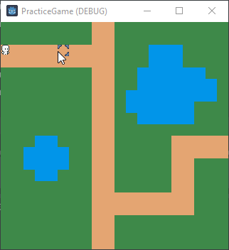
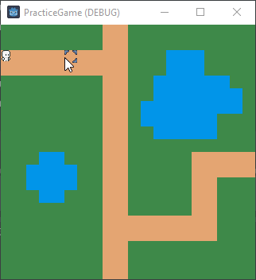

<< Back to Blog
Project Progression Idle Animation
14 Aug 2024
Today’s Progress on the Game
No lie, today wasn’t super productive but I’m proud that I got myself to
at least work on it a little bit. As the title indicates, I implemented
idle animation. Or more accureately, I improved the idle animation to reflect
the direction of the player’s last movement. In my last post, you’ll notice in
the final demonstration, the character will always revert to a right-facing idle
animation once the target destination is reached. The reason for this was in
my script, the function that turns the character and plays the correct
directional running animation is called when there is a movement between cells
occurring and will calculate the direction and play the appropriate directional
animation. Now, the idling is handled within the process function which is
constantly looping as long as that node is in the scene and to ensure that
the character isn’t moving without an input, there is an if statement that will
constantly catch the process and return as long as there is no active movement.
My process for returning the player to idle animation was to have the if statement
contain the play command so that once the path is satisfied and emptied, then
the idle animation will resume. Without that line, then the player will stop in place
but the animation for the last direction they were running in will continue to play.
So to fix this, I removed the idle animation command and altered my helper function
which detects the direction in which players are moving to accept the size of the array
which contains the current path. This is because as long as the array contains anything,
in other words size > 0, then an idle animation is unnecessary. However, the popping of
cells in the path is done at the end of the process function whereas the directional
function is called in the middle, so we actually have a fence-post issue. To remedy this,
I just decrement the size of the path to be -1 ahead of time, since we know a pop will occur
regardless. Now in the directional function, within the calculation of which direction the
player is moving in, we add a check to the end to see if the number is greater than 0. I chose
to use boolean logic with if not num. If the check passes, then the node knows to play
the idle animation in that direction. Below you can see the before and after.
 

Anyways, just a little progress today but it’s better than nothing! Hopefully
I’ll be back tomorrow with another update. Thank you for continuing to read and
have a good rest of your day!